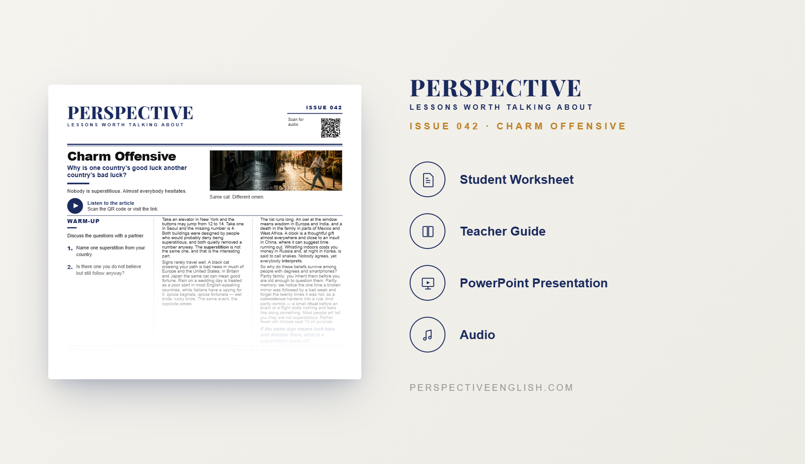

ISSUE 042
Superstitions ESL Lesson
Why is one country's good luck another country's bad luck?
A ready-to-teach ESL lesson exploring superstitions, omens and cultural beliefs around the world, and asking why the same sign can represent good fortune in one culture and disaster in another.
Collection 08 includes Issues 041–045.

LESSON PREVIEW

ABOUT THIS LESSON
About This Superstitions ESL Lesson
Why does an elevator in New York often skip floor 13 while one in Seoul may avoid the number 4? This B1–B2 superstitions ESL lesson explores how cultures around the world attach completely different meanings to numbers, animals, gifts, weather and everyday actions.
Students discover how a black cat can represent bad luck in one country and good fortune in another, why rain on a wedding day can be either a bad sign or a blessing, and how clocks, owls and whistling can carry very different meanings depending on where you are.
The lesson goes beyond simply comparing beliefs. Students consider why superstitions survive in modern societies, how family traditions and selective memory influence what people believe, and whether knowing that another culture believes the exact opposite makes a superstition easier to question.
FROM THE ARTICLE
WHAT'S INCLUDED
What's Included in Charm Offensive?
- Magazine-style B1–B2 ESL student worksheet
- Original reading and audio about superstitions and cultural beliefs
- Vocabulary and true-or-false comprehension activities
- Discussion questions about luck, rituals and modern superstition
- Opposite Omens critical-thinking activity
- Six cross-cultural superstitions for students to compare and evaluate
- International hotel speaking challenge
- 150–200 word opinion-writing task
- Teacher guide and complete answer key
- Ready-to-use classroom presentation
GET THE COMPLETE LESSON
Ready to Teach Charm Offensive?
Get the complete superstitions ESL lesson individually, or get Issues 041–045 together in Perspective Collection 08 when the collection is released.
Secure checkout and instant digital delivery through Payhip.